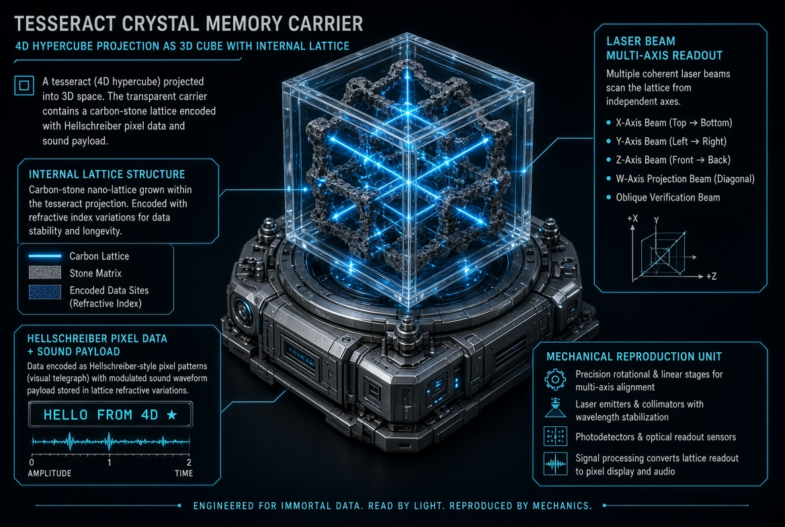
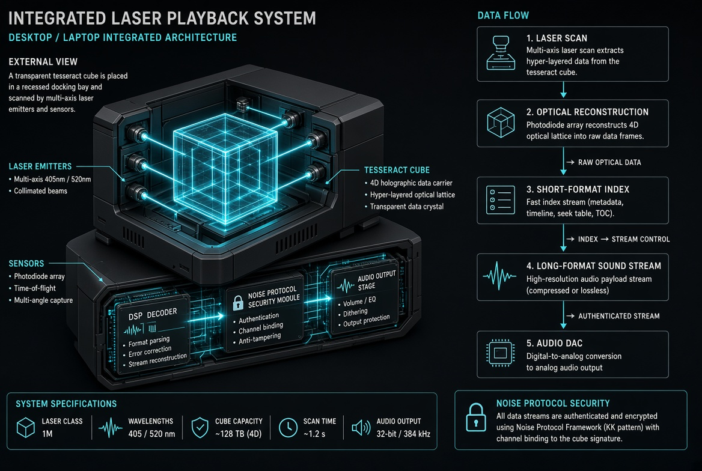
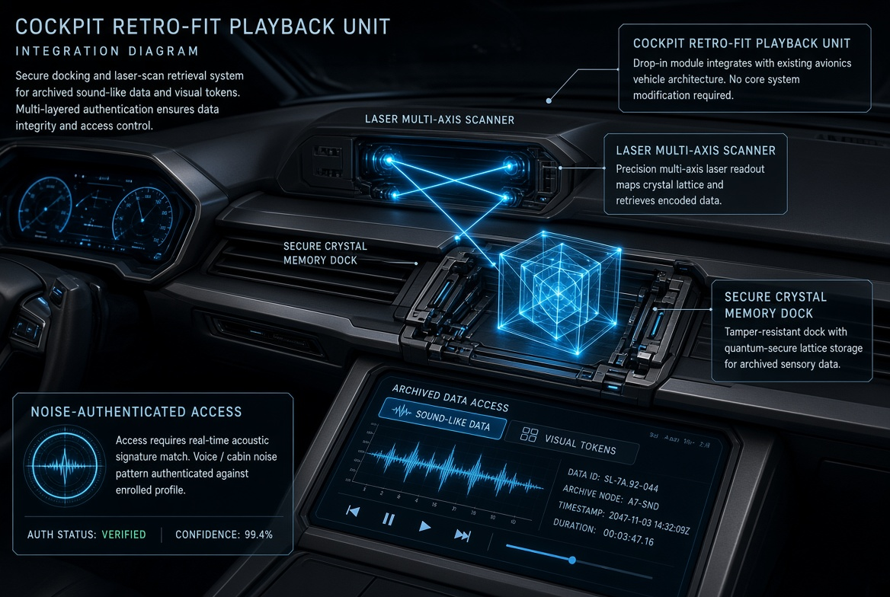
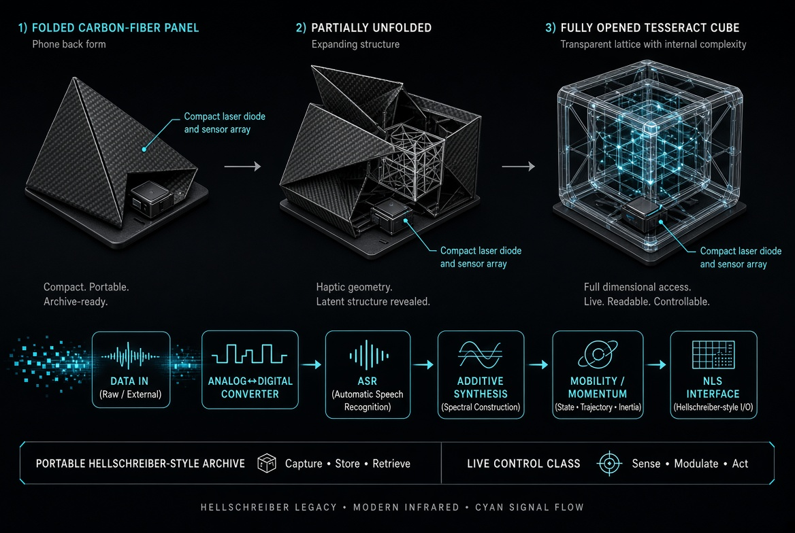
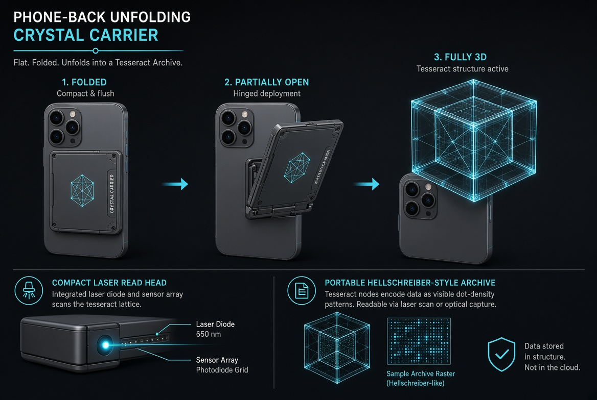
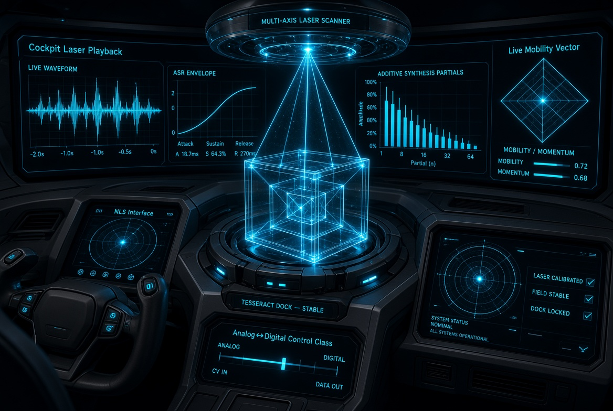
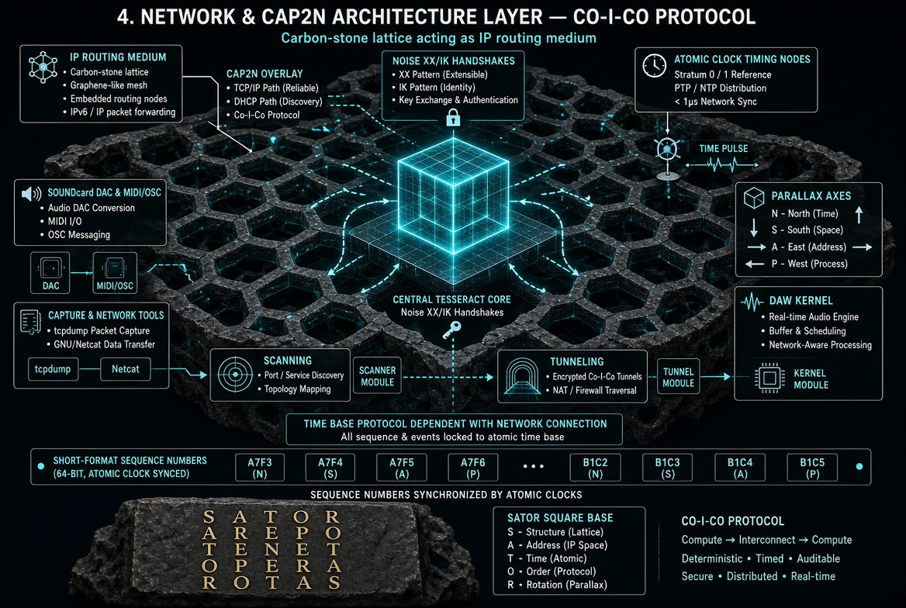
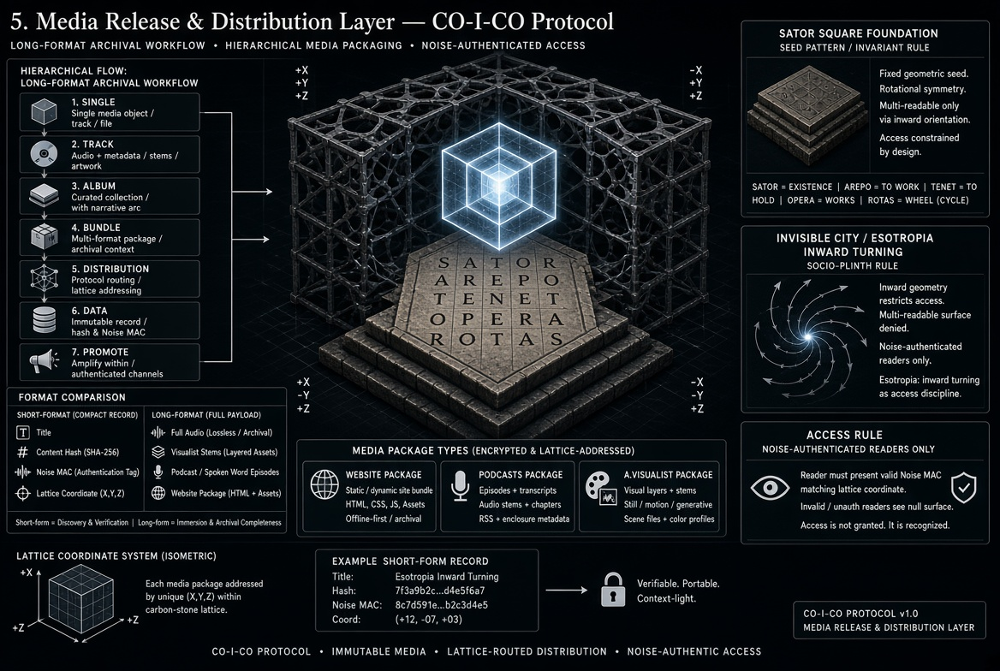

La Crahc01 · CO-I-CO · Crystal Memory
Optical Lattice Storage
& Unfolding Mechanisms
From Hellschreiber pixel commitment to volumetric tesseract carriers. Light circuits, multi-axis laser readout, and portable crystal archives that close the cloud–freelancer–origin circle.
Core Vision — Printed Pixel to Volumetric Crystal
The optical lattice carrier is a transparent three-dimensional structure — a projected tesseract containing a carbon-stone lattice. Data is encoded as refractive-index variations and Hellschreiber-style pixel densities rather than magnetic domains. Multi-axis coherent laser beams interrogate the lattice; interference patterns reconstruct both short-format visual tokens and long-format sound-like payloads.
- Multi-directional readability (Sator principle + Hellschreiber robustness)
- Permanent light / ink commitment — survives noise and physical wear
- Hybrid production: continuous tape for volume → lattice objects for critical archives
- Compatible with Analog↔Digital control class (ASR, Additive, Mobility/Momentum)

Unfolding Mechanisms — Three Form Factors
One lattice, three physical realisations. Desktop dock, vehicle cockpit retro-fit, and phone-back unfolding panel all read the same crystal object.

Desktop / Laptop Dock
Recessed multi-axis laser bay, full Analog↔Digital pipeline, DSP and Noise authentication.

Vehicle Cockpit Retro-Fit
Secure centre-console dock. Live mobility/momentum vectors and ASR envelopes while in motion.

Phone-Back Unfolding
Carbon-fibre panel unfolds into transparent tesseract. Compact laser diode + sensor array.
Portable & In-Vehicle Realisations


Metatronics & Network Layer
Metatronics replaces electronic current with light paths. Refractive lattices and printed optical waveguides become both storage and processing medium. The CAP2N layer supplies dual-redundant deterministic networking, atomic-clock synchronisation, Noise XX/IK handshakes and parallax multi-axis addressing. Sequence numbers remain locked to a common time base; the lattice itself acts as the IP routing medium.

Media Release & Distribution Layer
Hierarchical archival workflow from Single → Track → Album → Bundle → Distribution → Data → Promote. Short-format compact records for discovery; long-format full payloads for immersion. Sator Square foundation supplies the multi-readable invariant. Access is Noise-authenticated — invalid readers see null surface.

Information Architecture as Flux · Cloud Circle
Unlike physical buildings, information architecture is always in flux. Nodes, bases, layers and stages form a surface that is simultaneously a building and a landscape. Once work is uploaded it lives in the cloud, ready for instant response across geographies. A smartphone carries the network preferences for an entire journey. Within flight time thousands of potential readers and re-senders can be reached. The smart-send-tag returns a reply toward the origin — the sender themselves — closing the circle. The lattice carrier itself becomes a physical datacapsule: portable, multi-readable, authenticable.
- Design of information is the design of environments that notice their own changes
- Codes perform function, interaction and performance aspects simultaneously
- Sound (intensity · shape · tone) becomes a modelling and rendering action inside the lattice
- Freelancer displacement and free-agent status form the realistic background for portable optical archives
Control Class & Experimental Sound
Once the laser reconstructs the lattice data, the stream enters the control class: Attack/Sustain/Release envelopes, Additive Synthesis (harmonic & inharmonic clusters), Subharmonic paths, and the diamond Mobility/Momentum vector. The NLS interface provides non-linear shaping and feedback. The same control surface works on desktop, in-cockpit and on the unfolded phone carrier.
- Laser multi-axis scan → Optical reconstruction → Short-format index
- Long-format sound stream → ASR envelope shaping → Additive / sub-harmonic synthesis
- Mobility/Momentum vector → NLS interface → Audio DAC output
Closing Vision
A physical object that is simultaneously
archive · instrument · network node · light circuit
Optical lattice written by light, read by laser
Unfolding from flat panel to volumetric tesseract
Hellschreiber robustness + Sator multi-directionality
Metatronics: light as both medium and message
Control class live on every form factor
Cloud circle completed by a portable crystal carrier
“Information is design to reveal the stated intends…
a purpose is needed to serve the output and the overall design.”